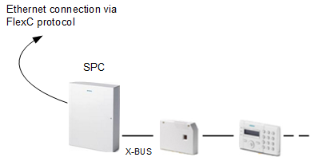

SPC Intrusion Architecture and Limits
The SPC panel can communicate with Desigo CC over a network IP connection by using the FlexC protocol.
Communication Configuration
Communication protocol and options are selected at the panel level, when you configure the SPC unit. Note that SPC control panels can connect to multiple hosts, and you can configure a different setting for each connection.
At management station level, you can import the SPC configuration file that contains the selected options.

SPC Connectivity Limits | |
| Maximum |
SPC panels per SPC driver | 50 |
SPC points per SPC driver | 5,000 |
SPC drivers on Desigo CC Server/FEP | 5 |
SPC Compatibility Information
- Compatible panel versions:
- SPC V3.8.6 via FlexC
- SPC V3.9.0 via FlexC
- SPC V3.10.0 via FlexC
- SPC V3.11.1 via FlexC
- SPC V3.12.0 via FlexC
- SPC V3.13.0 via FlexC
- SPC V3.14.1 via FlexC
Limitations and Known Issues
- Desigo CC supports SPC configuration with Single Path ATS (alarm transmission system) only.
- Desigo CC does not support SPC connection with 3G and 4G modems, even using SPC Dual Path ATS configuration.
- When the SPC panels are connected via FlexC, the status of SPC users cannot be properly shown in Desigo CC. Users are erroneously reported as
Isolatedand the status ofLogged-inis missing.
Related Topics
- For detailed information about the required SPC settings, refer to Preparing the SPC Configuration File.